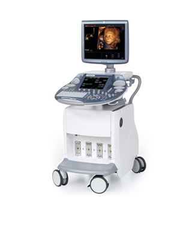

En Centro de Diagnóstico por Imágenes Ultrasónicas contamos con un médico egresado de la Facultad de Medicina de la Universidad de Buenos Aires en 1976, el Doctor José Antonio Tomasella. Formado en el servicio de ecografía del Hospital Italiano y fue médico becario del mismo.
Participó en 1979 en el primer Curso Internacional de Ultrasonido en el CLAP (Curso Internacional de Ecografía Obstétrica) en Montevideo Uruguay. Posee título de la COMRA (Confederación Medica de la República Argentina). Socio de la SAUMB (Sociedad Argentina de Ultrasonografía en Medicina y Biología) desde hace más de 20 años.
Títulos de especialista en ecografía general otorgado por el Ministerio de Salud Pública de la provincia de Corrientes. Participación activa en congresos y cursos intensivos de formación de la SAUMB. Recertificación de títulos por el comité de la AMA (Asociación Medica Argentina). En 1981 comenzó su trabajo como ginecólogo, ecografía y obstetra en el Sanatorio Policlínico y en el Hospital San Juan de Dios en la ciudad de Goya.
En 1982 sea crea el Centro de Diagnóstico por Imágenes Ultrasónicas con el primer ecógrafo sectorial de la región. En 1990 se introduce la tecnología transvaginal. En 1999 con la adquisición de un nuevo ecógrafo de origen japonés, se incorpora las tecnologías Dopple Color, Power Angio y 3D.
En el 2006 se incorpora un equipo con tecnología 4D en tiempo real, único en la región. En el 2013 se realiza una ampliación de la sala de espera y una renovación del mobiliario, más la instalación de un televisor para el mayor confort del paciente. En el 2014 hemos adquirido un ecógrafo de última generación que realiza ecografías en alta definición.